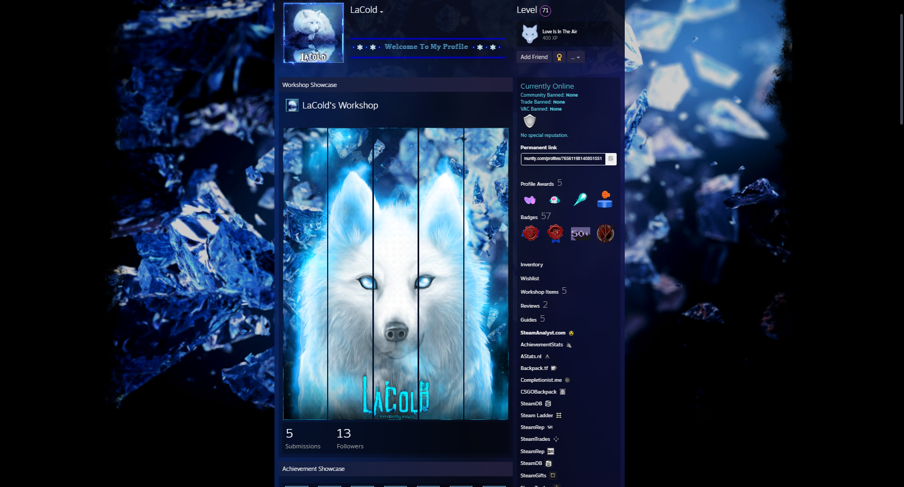
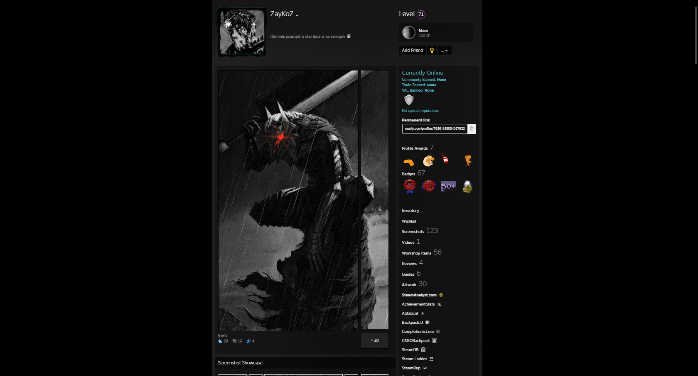
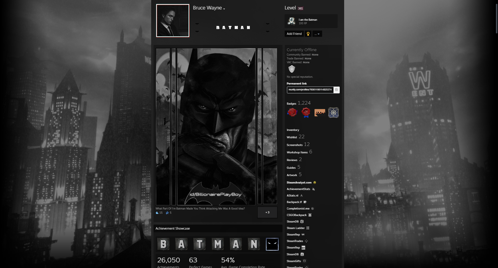
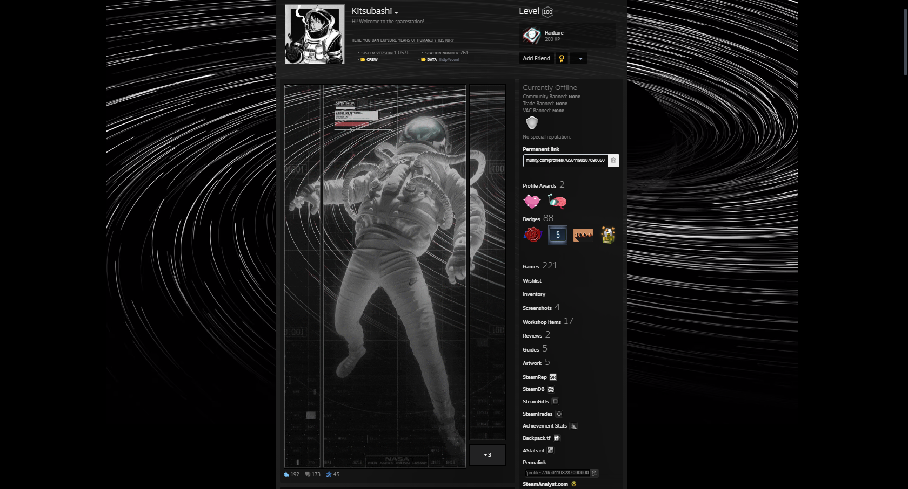

5
LaColdLaCold has a very unique profile focusing on wolves with a blue color theme.What is especially nice and unique is the detailed emoticon art displayed on the profile of a wolf´s eye.
4
ZayKoZZayKoZ profile is centered around the manga, Berserk. There are artwork showcases of the main character, Guts. The black and white is a great addition
3
Bruce WayneBruce Wayne has a profile about Batman. One of the artwork showcases is home to a lot of characters from the franchise.
2
KazzyKazzy's profile has given the Yakuza franchise a cyberpunk theme. It's been done well by using the artwork showcases.

1
KitsubashiKitsubashi's profile is space themed with black and white colours. The animated artworks blend in well the animated background.
